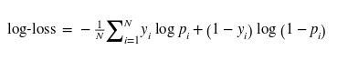

Machine Learning
This unit, nearing the end of the module, focused on various model selection and evaluation techniques.
According to Krishna (2021):
Model selection involves choosing the most appropriate learning algorithm to model data effectively. For instance, when addressing a classification problem, one might evaluate options such as Logistic Regression, Support Vector Machines, decision trees, among others. Similarly, when tackling a regression problem, decisions must be made regarding the complexity and degree of the regression techniques applied.Model evaluation is the process of determining a model's performance on unseen data, essentially assessing its generalization capabilities. This evaluation involves testing the model's performance across various metrics, including accuracy, precision, recall, F1-score, and AUC-ROC, to ensure it can generalize well to new, unseen data.A Jupyter notebook was provided to review and study the different performance metrics. Below is the discussion of each metric highlighted in the notebook.
While accuracy is the most common evaluation metric, representing the proportion of correct predictions made by the model, it does not provide detailed insights into the performance of the model on specific classes. This is where the confusion matrix becomes invaluable. A confusion matrix offers an introspective view into the predictions of each class, breaking down the model's performance into four categories: True Positive (TP), True Negative (TN), False Positive (FP), and False Negative (FN) . This detailed breakdown allows for a deeper understanding of how well the model is performing across different classes, identifying areas where the model excels and where it may need improvement. For example, it can highlight if the model is particularly good at identifying one class but frequently misclassifies another, enabling more targeted refinements and optimizations.
AUC stands for "Area Under the Curve," and ROC stands for "Receiver Operating Characteristic." This metric provides a graphical representation of a model's performance by plotting the True Positive Rate (TPR) against the False Positive Rate (FPR) at various threshold settings.
According to Zhou (N.D.) ROC curve illustrates the trade-off between sensitivity and specificity (1 - FPR) across different thresholds. The AUC, a single scalar value, summarises the overall ability of the model to discriminate between positive and negative classes. An AUC of 1.0 indicates a perfect model, whereas an AUC of 0.5 suggests a model that performs no better than random guessing.
The AUC-ROC curve is particularly useful for comparing the performance of multiple models and for assessing the quality of predictions across various thresholds, providing a more comprehensive evaluation than accuracy alone. It is also robust to imbalanced class distributions, making it a preferred metric in many practical applications
Log-loss, also known as logistic loss or cross-entropy loss, is a fundamental evaluation metric for classification models, particularly in probabilistic classification scenarios. Log-loss measures the performance of a classification model whose output is a probability value between 0 and 1. It quantifies the accuracy of probabilistic predictions by comparing the predicted probabilities to the actual class labels.
Where:
In the context of regression models, evaluating performance requires metrics that capture the accuracy and consistency of the model's predictions against the actual values. Three commonly used regression metrics are Root Mean Squared Error (RMSE), Mean Absolute Error (MAE), and R-squared (R2).
Kopper, A., Karkare, R., Paffenroth, R.C., Apelian, D. (2020) Model Selection and Evaluation for Machine Learning: Deep Learning in Materials Processing. Integrating Materials and Manufacturing Innovation 9, 287–300.
Krishna, D., 2021. Model Selection and Evaluation [WWW Document]. Towards Data Science. URL https://towardsdatascience.com/model-selection-and-evaluation-57701ff13c2b (accessed 6.3.24).
Zheng, A., 2015. Chapter 2. Evaluation Metrics. In: Evaluating Machine Learning Models. O’Reilly Media, Inc.
Zhou, Z.-H., n.d. Machine Learning. Springer Nature Singapore.